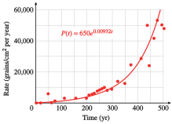

Section 5.3 The Natural Base
There is another base for logarithms and exponential functions that is often used in applications. This base is an irrational number called \(e\text{,}\) where
\begin{equation*}
\blert{e \approx 2.71828182845}
\end{equation*}
The number \(e\) is essential for many advanced topics, and it is often called the natural base.
Subsection The Natural Exponential Function
The natural exponential function is the function \(f(x) = e^x\text{.}\) Values for \(e^x\) can be obtained with a calculator using the \(\boxed{e^x}\) key ( 2nd LN on most calculators). For example, you can evaluate \(e^1\) by pressing
2nd LN \(1\)
to confirm the value of \(e\) given above.
Because \(e\) is a number between \(2\) and \(3\text{,}\) the graph of \(f(x) = e^x\) lies between the graphs of \(y = 2^x\) and \(y = 3^x\text{.}\) Compare the tables of values and the graphs of the three functions below. You can verify the table and graphs on your calculator.
| \(x\) | \(y=2^x\) | \(y=e^x\) | \(y=3^x\) |
| \(-3\) | \(0.125\) | \(0.050\) | \(0.037\) |
| \(-2\) | \(0.250\) | \(0.135\) | \(0.111\) |
| \(-1\) | \(0.500\) | \(0.368\) | \(0.333\) |
| \(0\) | \(1\) | \(1\) | \(1\) |
| \(1\) | \(2\) | \(2.718\) | \(3\) |
| \(2\) | \(4\) | \(7.389\) | \(9\) |
| \(3\) | \(8\) | \(20.086\) | \(27\) |

Example 5.56.
Use technology to graph each function. How does each graph differ from the graph of \(y = e^x\text{?}\)
- \(\displaystyle g(x) = e^{x+2}\)
- \(\displaystyle h(x) = e^x + 2\)
Solution.

The graph of \(g\) is shifted \(2\) units to the left of \(y = e^x\text{.}\) The graph of \(h\) is shifted \(2\) units up from \(y = e^x\text{.}\) The graphs are shown above.
Checkpoint 5.57. Practice 1.
Subsection The Natural Logarithmic Function
The base \(e\) logarithm of a number \(x\text{,}\) or \(\log_ e x\text{,}\) is called the natural logarithm of \(x\) and is denoted by \(\ln x\text{.}\)
The Natural Logarithm.
The natural logarithm is the logarithm base \(e\text{.}\)
\begin{equation*}
\ln x = \log_{e}{x}, ~~~~ x\gt 0
\end{equation*}
The natural logarithm of \(x\) is the exponent to which \(e\) must be raised to produce \(x\text{.}\) For example, the natural logarithm of \(10\text{,}\) or \(\ln 10\text{,}\) is the solution of the equation
\begin{equation*}
e^y = 10
\end{equation*}
You can verify on your calculator that
\begin{equation*}
e^{\alert{2.3}} ~~ \approx 10 \text{ or } ~~ \ln 10 \approx \alert{2.3}
\end{equation*}
In general, natural logs obey the same conversion formulas that work for logs to other bases.
Conversion Formulas for Natural Logs.
\begin{equation*}
\blert{y = \ln x} ~~\text{ if and only if } ~~ \blert{e^y = x}
\end{equation*}
Checkpoint 5.58. QuickCheck 2.
In particular,
\begin{equation*}
\begin{aligned}[t]
\ln e \amp = 1 \text{ because } e^1 = e \\
\ln 1 \amp = 0 \text{ because } e^0 = 1 \\
\end{aligned}
\end{equation*}
The conversion formulas tell us that the natural log function, \(g(x) = \ln x\text{,}\) is the inverse function for the natural exponential function, \(f(x) = e^x\text{.}\)
Example 5.59.
- Graph \(f(x) = e^x\) and \(f^{-1}(x) = \ln x\) on the same grid.
- Give the domain and range of the natural log function.
Solution.
-
We can make a table of values for \(f^{-1}(x) = \ln x\) by interchanging the columns in the table for \(f(x) = e^x\text{.}\) Plotting the points gives us the graph below.
\(x\) \(y=\ln x\) \(0.050\) \(-3\) \(0.135\) \(-2\) \(0.368\) \(-1\) \(1\) \(0\) \(2.718\) \(1\) \(7.389\) \(2\) \(20.086\) \(3\) 
- The domain of the natural log function is the same as the range of \(y = e^x\text{,}\) or all positive numbers. The range of \(y = \ln x\) is the same as the domain of \(y = e^x\text{,}\) or all real numbers. These results are confirmed by the graph of \(y = \ln x\text{.}\)
Caution 5.60.
Observe that the natural log of a number greater than \(1\) is positive, while the logs of fractions between \(0\) and \(1\) are negative. In addition, the natural logs of negative numbers and zero are undefined.
Checkpoint 5.61. Practice 2.
Use your calculator to evaluate each logarithm. Round your answers to four decimal places.
- \(\ln 100\approx\)
- \(\ln 0.01\approx\)
- \(\ln e^3\approx\)
Checkpoint 5.62. Pause and Reflect.
Explain why \(\ln\dfrac{1}{e^3} = -3\text{.}\)
Subsection Properties of the Natural Logarithm
We use natural logarithms in the same way that we use logs to other bases. The properties of logarithms that we studied in Section 4.4 also apply to logarithms base \(e\text{.}\)
Properties of Natural Logarithms.
If \(x, y \gt 0\text{,}\) then
- \(\displaystyle \ln{(xy)} = \ln{x} + \ln{y}\)
- \(\displaystyle \ln\dfrac{x}{y} = \ln x - \ln y\)
- \(\displaystyle \ln{x^k} = k \ln x \)
Because the functions \(y = e^x\) and \(y = \ln x\) are inverse functions, the following properties are also true.
The Natural log and \(e^x\).
\begin{equation*}
\ln{e^x} = x,~~\text{ for all }x, ~~~~~\text{ and }~~~e^{\ln x} = x,~~\text{ for }x \gt 0
\end{equation*}
Example 5.63.
Simplify each expression.
- \(\displaystyle \ln e^{0.3x}\)
- \(\displaystyle e^{2 \ln(x+3)}\)
Solution.
- The natural log is the log base \(e\text{,}\) and hence the inverse of \(e^x\text{.}\) Therefore,\begin{equation*} \ln {e^{0.3x}} = 0.3x \end{equation*}
- First, we simplify the exponent using the third property of logs to get\begin{equation*} 2 \ln(x + 3) = \ln(x + 3)^2 \end{equation*}Then \(e^{2 \ln(x+3)} = e^{\ln(x+3)^2} = (x + 3)^2\text{.}\)
Checkpoint 5.64. Practice 3.
Subsection Solving Equations
We use the natural logarithm to solve exponential equations with base \(e\text{.}\) The techniques we’ve learned for solving other exponential equations also apply to equations with base \(e\text{.}\)
Example 5.65.
Solve each equation for \(x\text{.}\)
- \(\displaystyle e^x = 0.24\)
- \(\displaystyle \ln x = 3.5\)
Solution.
- We convert the equation to logarithmic form and evaluate using a calculator.\begin{equation*} x = \ln 0.24 \approx -1.427 \end{equation*}
- We convert the equation to exponential form and evaluate.\begin{equation*} x = e^{3.5} \approx 33.1155 \end{equation*}
Checkpoint 5.66. Practice 4.
Checkpoint 5.67. QuickCheck 3.
Why is the equation \(e^x=6.5\) easier to solve than \(8^x=6.5\) ?
- 8 is larger than 6.5.
- \(k\) is a constant.
- There is a button for log base e on the calculator, but not a button for log base 8.
- Because \(e\) is an irrational number.
To solve more complicated exponential equations, we isolate the power on one side of the equation before converting to logarithmic form.
Example 5.68.
Solve \(140 = 20 e^{0.4x}\text{.}\)
Solution.
First, we divide each side by \(20\) to obtain
\begin{equation*}
7 = e^{0.4x}
\end{equation*}
Then we convert the equation to logarithmic form.
\begin{equation*}
\begin{aligned}[t]
0.4x \amp = \ln 7 \amp\amp \blert{\text{Divide both sides by 0.4.}}\\
x \amp= \frac{\ln 7}{0.4}
\end{aligned}
\end{equation*}
Rounded to four decimal places, \(x \approx 4.8648\text{.}\)
Note 5.69.
We can also solve the equation in Example 5.68,
\begin{equation*}
7 = e^{0.4x}
\end{equation*}
by taking the natural logarithm of both sides. This gives us
\begin{equation*}
\begin{aligned}[t]
\ln 7 \amp = \ln e^{0.4x}\amp\amp \blert{\text{Simplify the right side.}} \\
\ln 7 \amp = 0.4x
\end{aligned}
\end{equation*}
because \(\ln{e^a} = a\) for any number \(a\text{.}\) We then proceed with the solution as before.
Checkpoint 5.70. Practice 5.
Example 5.71.
Solve \(P = \dfrac{a}{1 + be^{-kt}}\) for \(t\text{.}\)
Solution.
We multiply both sides of the equation by the denominator, \(1 + be^{-kt}\text{,}\) to get
\begin{equation*}
P(1 + be^{-kt} ) = a
\end{equation*}
Then we isolate the power, \(e^{-kt}\text{,}\) as follows:
\begin{equation*}
\begin{aligned}[t]
1 + be^{-kt} \amp = \frac{a}{P}\amp\amp \blert{\text{Subtract 1 from both sides.}}\\
be^{-kt} \amp = \frac{a}{P}- 1 \amp\amp \blert{\text{Rewrite the right side. }}\\
be^{-kt} \amp = \frac{a - P}{P}\amp\amp \blert{\text{Divide both sides by }b.}\\
e^{-kt} \amp= \frac{a - P}{bP}
\end{aligned}
\end{equation*}
Next, we take the natural logarithm of both sides to get
\begin{equation*}
\ln {e^{-kt}} = \ln{\frac{a - P}{bP}}
\end{equation*}
and recall that \(\ln {e^x} = x\) to simplify the left side.
\begin{equation*}
-kt = \ln{\frac{a - P}{bP}}
\end{equation*}
Finally, we divide both sides by \(-k\) to solve for \(t\text{.}\)
\begin{equation*}
t =\frac{-1}{k}\ln{\frac{a-P}{bP}}
\end{equation*}
Checkpoint 5.72. Practice 6.
Checkpoint 5.73. Pause and Reflect.
Delbert says that he will begin solving the equation \(100e^{0.6t}=40\) by computing \(e^{0.6t}\text{.}\) Is this a good strategy? Why or why not?
Subsection Exponential Growth and Decay
In Section 4.1, we considered functions of the form
\begin{equation*}
P(t) = P_0\cdot b^t
\end{equation*}
which describe exponential growth when \(b \gt 1\) and exponential decay when \(0 \lt b \lt 1\text{.}\) Exponential growth and decay can also be modeled by functions of the form
\begin{equation*}
\blert{P(t) = P_0 \cdot e^{kt}}
\end{equation*}
where we have substituted \(e^k\) for the growth factor \(b\text{,}\) so that
\begin{equation*}
\begin{aligned}[t]
P(t) \amp = P_0 \cdot b^t\\
\amp = P_0 \cdot \left(e^k\right)^t = P_0 \cdot e^{kt}\\
\end{aligned}
\end{equation*}
We can find the value of \(k\) by solving the equation \(b = e^k\) for \(k\text{,}\) to get \(k = \ln b\text{.}\)
For instance, in Example 4.2 in Section 4.1 we found that a colony of bacteria grew according to the formula
\begin{equation*}
P(t) = 100 \cdot \alert{3^t}
\end{equation*}
We can express this function in the form \(P(t) = 100 \cdot \alert{e^{kt}}\) if we set
\begin{equation*}
3 = e^k ~ \text{ or } ~ k = \ln 3 \approx 1.0986
\end{equation*}
Thus, the growth law for the colony of bacteria can be written
\begin{equation*}
P(t) \approx 100 \cdot e^{1.0986t}
\end{equation*}
By graphing both functions on your calculator, you can verify that
\begin{equation*}
P(t) = 100 \cdot 3t~~~\text{and}~~~P(t) = 100 \cdot e^{1.0986t}
\end{equation*}
are just two ways of writing the same function.
Example 5.74.
From 1990 to 2000, the population of Clark County, Nevada, grew by \(6.4\%\) per year.
- What was the growth factor for the population of Clark County from 1990 to 2000? If the population of Clark County was \(768,000\) in 1990, write a formula for the population \(t\) years later.
- Write a growth formula for Clark County using base \(e\text{.}\)
Solution.
- The growth factor was \(b = 1 + r = 1.064\text{.}\) The population \(t\) years later was\begin{equation*} P(t) = 768,000 (1.064)^t \end{equation*}
- We use the formula \(P(t) = P_0 \cdot e^{kt}\text{,}\) where \(e^k = 1.064\text{.}\) Solving for \(k\text{,}\) we find\begin{equation*} k = \ln 1.064 = 0.062 \end{equation*}so \(P(t) = 768,000 e^{0.062t}\text{.}\)
Checkpoint 5.75. Practice 7.
From 1994 to 1998, the number of personal computers connected to the Internet grew according to the formula \(N(t) = 2.8e^{0.85t}\text{,}\) where \(t = 0\) in 1994 and \(N\) is in millions. (Source: Los Angeles Times, September 6, 1999)
-
Evaluate \(N(1)=\) . By what percent did the number of Internet users grow in one year?About %
-
Express the growth law in the form \(N(t) = N_0 (1 + r)^t\text{.}\)\(N(t)=\)
If \(k\) is negative, then \(e^k\) is a fraction less than \(1\text{.}\) For example, if \(k = -2\text{,}\)
\begin{equation*}
e^{-2} = \frac{1}{e^2} \approx \frac{1}{7.3891} \approx 0.1353
\end{equation*}
Thus, for negative values of \(k\text{,}\) the function \(P(t) = P_0 e^{kt}\) describes exponential decay.
Exponential Growth and Decay.
The function
\begin{equation*}
\blert{P(t) = P_0 e^{kt}}
\end{equation*}
describes exponential growth if \(k \gt 0\text{,}\) and exponential decay if \(k \lt 0\text{.}\)
Checkpoint 5.76. QuickCheck 4.
Example 5.77.
Express the decay law \(N(t) = 60 (0.8)^t\) in the form \(N(t) = N_0 e^{kt}\text{.}\)
Solution.
For this decay law, \(N_0 = 60\) and \(b = 0.8\text{.}\) We would like to find a value for \(k\) so that \(e^k = b = 0.8\text{,}\) that is, we must solve the equation
\begin{equation*}
\begin{aligned}[t]
e^k \amp = 0.8\amp\amp \blert{\text{Take natural log of both sides.}}\\
\ln e^k\amp = \ln 0.8\amp\amp \blert{\text{Simplify.}}\\
k\amp = \ln 0.8 \approx -0.2231
\end{aligned}
\end{equation*}
Replacing \(b\) with \(e^k\text{,}\) we find that the decay law is
\begin{equation*}
N(t) \approx 60e^{-0.2231t}
\end{equation*}
Checkpoint 5.78. Practice 8.
A scientist isolates \(25\) grams of krypton-91, which decays according to the formula
\begin{equation*}
N(t) = 25e^{-0.07t}\text{,}
\end{equation*}
where \(t\) is in seconds.
-
Complete the table of values showing the amount of krypton-91 left at \(10\)-second intervals over the first minute.
\(t\) \(0\) \(10\) \(20\) \(30\) \(N(t)\) \(t\) \(40\) \(50\) \(60\) \(N(t)\) - Use the table to choose a suitable window and graph the function \(N(t)\text{.}\)
-
Write and solve an equation to answer the question: How long does it take for 60% of the krypton-91 to decay?
- \(\displaystyle 25e^{-0.07t}= 0.60 \)
- \(\displaystyle 25e^{-0.07t}= 0.60 (25) \)
- \(\displaystyle 25e^{-0.07t}= 0.40 \)
- \(\displaystyle 25e^{-0.07t}= 0.40 (25) \)
- None of the above
Answer: \(t=\) seconds
Hint.
Answer 1.
Answer 2.
Answer 3.
Answer 4.
Answer 5.
Answer 6.
Answer 7.
Answer 8.
Answer 9.
Solution.
If \(60\%\) of the krypton-91 has decayed, \(40\%\) of the original \(25\) grams remains.
\(25\)
\(12.4146\)
\(6.16492\)
\(3.06141\)
\(1.52025\)
\(0.754935\)
\(0.374889\)
\(\text{Choice 4}\)
\(\frac{\ln\!\left(0.4\right)}{-0.07}\)
\(t\) \(0\) \(10\) \(20\) \(30\) \(40\) \(50\) \(60\) \(N(t)\) \(25\) \(12.41\) \(6.16\) \(3.06\) \(1.52\) \(0.75\) \(0.37\) - A graph is below.
- \(25 e^{-0.07t} = 0.40(25)\text{;}\) \(t=\dfrac{\ln(0.4)}{-0.07}\approx 13.09\) seconds
Graph for part (b):

Checkpoint 5.79. Pause and Reflect.
Explain how to rewrite \(P(t)=P_0 b^t\) with the natural base.
Subsection Continuous Compounding
Some savings institutions offer accounts on which the interest is compounded continuously. The amount accumulated in such an account after \(t\) years at interest rate \(r\) is given by the function
\begin{equation*}
\blert{A(t) = Pe^{rt}}
\end{equation*}
where \(P\) is the principal invested.
Example 5.80.
Suppose you invest $\(500\) in an account that pays \(8\%\) interest compounded continuously. You leave the money in the account without making any additional deposits or withdrawals.
- Write a formula that gives the value of your account \(A(t)\) after \(t\) years.
- Make a table of values showing \(A(t)\) for the first \(5\) years.
- Graph the function \(A(t)\text{.}\)
- How much will the account be worth after \(10\) years?
- How long will it be before the account is worth $\(1000\text{?}\)
Solution.
- We substitute \(500\) for \(P\text{,}\) and \(0.08\) for \(r\) to find\begin{equation*} A(t) = 500e^{0.08t} \end{equation*}
-
We evaluate the formula for \(A(t)\) to obtain a table.
\(t\) \(A(t)\) \(0\) \(500\) \(1\) \(541.64\) \(2\) \(586.76\) \(3\) \(635.62\) \(4\) \(688.56\) \(5\) \(745.91\) 
- The graph of \(A(t)\) is shown above.
- We evaluate \(A(t)\) for \(t = 10\text{.}\)\begin{equation*} \begin{aligned}[t] A(10) \amp= 500 e^{0.08(10)}\\ \amp = 500 e^{0.8}\\ \amp \approx 500(2.2255) = 1112.77 \end{aligned} \end{equation*}The account will be worth $\(1112.77\) after \(10\) years.
- We substitute \(1000\) for \(A(t)\) and solve the equation.\begin{equation*} \begin{aligned}[t] 1000 \amp= 500 e^{0.08t}\amp\amp \blert{\text{Divide both sides by 500.}}\\ 2 \amp = e^{0.08t}\amp\amp \blert{\text{Take natural log of both sides.}}\\ \ln 2 \amp= \ln e^{0.08t} = 0.08t\amp\amp \blert{\text{Divide both sides by 0.08.}}\\ t \amp= \frac{\ln 2}{0.08}\approx 8.6643 \end{aligned} \end{equation*}The account will be worth $\(1000\) after approximately \(8.7\) years.
Checkpoint 5.81. Practice 9.
Checkpoint 5.82. Pause and Reflect.
Explain why solving exponential equations in base \(e\) is no harder than solving exponential equations in base 10.
Subsection Section Summary
Subsubsection Vocabulary
Look up the definitions of new terms in the Glossary.
- Natural exponential function
- Natural logarithm
- Continuous compounding
Subsubsection CONCEPTS
- The natural base is an irrational number called \(e\text{,}\) where\begin{equation*} e\approx2.71828182845 \end{equation*}
- The natural exponential function is the function \(f (x) = e^x\text{.}\) The natural log function is the function \(g(x) = \ln x = \log_e x\text{.}\)
Conversion Formulas for Natural Logs.
\begin{equation*} \blert{y = \ln x} ~~\text{ if and only if } ~~ \blert{e^y = x} \end{equation*}Properties of Natural Logarithms.
If \(x, y \gt 0\text{,}\) then- \(\displaystyle \ln{(xy)} = \ln{x} + \ln{y}\)
- \(\displaystyle \ln\dfrac{x}{y} = \ln x - \ln y\)
- \(\displaystyle \ln{x^k} = k \ln x \)
- We use the natural logarithm to solve exponential equations with base \(e\text{.}\)
Exponential Growth and Decay.
The function\begin{equation*} \blert{P(t) = P_0 e^{kt}} \end{equation*}describes exponential growth if \(k \gt 0\text{,}\) and exponential decay if \(k \lt 0\text{.}\)- Continuous compounding: The amount accumulated in an account after \(t\) years at interest rate \(r\) compounded continuously is given by\begin{equation*} A(t) = Pe^{rt} \end{equation*}where \(P\) is the principal invested.
Subsubsection STUDY QUESTIONS
- State the value of \(e\) to \(3\) decimal places. Memorize this value.
- Explain why \(\ln e^x = x\text{.}\)
- State the formula for exponential growth using base \(e\text{.}\)
- How is the formula for exponential decay in base \(e\) different from the formula for exponential growth?
Subsubsection SKILLS
Practice each skill in the Homework problems listed.
- Graph exponential functions base \(e\text{:}\) #1–4
- Simplify expressions: #5 and 6
- Solve exponential and log equations base \(e\text{:}\) #7–10, 23–30
- Use the properties of logs and exponents with the natural base: #19–22, 37–40
- Use the natural exponential function in applications: #11–14, 47–58
- Convert between \(P(t) = P_0(1 + r )^t\) and \(P(t) = P_0e^{kt}\text{:}\) #15–18, 41–46
Exercises Homework 5.3
Exercise Group.
For Problems 1–4, use your calculator to complete the table for each function. Then choose a suitable window and graph the function.
| \(x\) | \(-10\) | \(-5\) | \(0\) | \(5\) | \(10\) | \(15\) | \(20\) |
| \(f(x)\) | \(\hphantom{0000}\) | \(\hphantom{0000}\) | \(\hphantom{0000}\) | \(\hphantom{0000}\) | \(\hphantom{0000}\) | \(\hphantom{0000}\) | \(\hphantom{0000}\) |
1.
\(f(x)=e^{0.2x} \)
2.
\(f(x)=e^{0.6x} \)
3.
\(f(x)= e^{-0.3x} \)
4.
\(f(x)=e^{-0.1x} \)
Exercise Group.
For Problems 5–6, simplify.
5.
- \(\displaystyle \ln e^2\)
- \(\displaystyle e^{\ln 5t} \)
- \(\displaystyle e^{-\ln x} \)
- \(\displaystyle \ln \sqrt{e} \)
6.
- \(\displaystyle \ln e^{x^4}\)
- \(\displaystyle e^{3 \ln x} \)
- \(\displaystyle e^{\ln x -\ln y} \)
- \(\displaystyle \ln \left(\dfrac{1}{e^{2t}} \right) \)
Exercise Group.
For Problems 7–10, solve for \(x\text{.}\) Round your answers to two decimal places.
7.
- \(\displaystyle e^x=1.9\)
- \(\displaystyle e^x=45\)
- \(\displaystyle e^x=0.3\)
8.
- \(\displaystyle e^x=2.1\)
- \(\displaystyle e^x=60\)
- \(\displaystyle e^x=0.9\)
9.
- \(\displaystyle \ln x=1.42\)
- \(\displaystyle \ln x = 0.63\)
- \(\displaystyle \ln x = -2.6\)
10.
- \(\displaystyle \ln x=2.03\)
- \(\displaystyle \ln x = 0.59\)
- \(\displaystyle \ln x = -3.4\)
11.
The number of bacteria in a culture grows according to the function
\begin{equation*}
N(t) = N_0 e^{0.04t}
\end{equation*}
where \(N_0\) is the number of bacteria present at time \(t = 0\) and \(t\) is the time in hours.
- Write a growth law for a sample in which \(6000\) bacteria were present initially.
- Make a table of values for \(N(t)\) in \(5\)-hour intervals over the first \(30\) hours.
- Graph \(N(t) \text{.}\)
- How many bacteria were present at \(t = 24\) hours?
- How much time must elapse (to the nearest tenth of an hour) for the original \(6000\) bacteria to increase to \(100,000\text{?}\)
12.
Hope invests \(\$2000\) in a savings account that pays \(5\frac{1}{2}\%\) annual interest compounded continuously.
- Write a formula that gives the amount of money \(A(t)\) in Hope’s account after \(t\) years.
- Make a table of values for \(A(t)\) in \(2\)-year intervals over the first \(10\) years.
- Graph \(A(t) \text{.}\)
- How much will Hope’s account be worth after \(7\) years?
- How long will it take for the account to grow to \(\$5000\text{?}\)
13.
The intensity, \(I\) (in lumens), of a light beam after passing through \(t\) centimeters of a filter having an absorption coefficient of \(0.1\) is given by the function
\begin{equation*}
I (t) = 1000e^{-0.1t}
\end{equation*}
- Graph \(I (t)\text{.}\)
- What is the intensity (to the nearest tenth of a lumen) of a light beam that has passed through \(0.6\) centimeter of the filter?
- How many centimeters (to the nearest tenth) of the filter will reduce the illumination to \(800\) lumens?
14.
X-rays can be absorbed by a lead plate so that
\begin{equation*}
I (t) = I_0 e^{-1.88t}
\end{equation*}
where \(I_0\) is the X-ray count at the source and \(I (t)\) is the X-ray count behind a lead plate of thickness \(t\) inches.
- Graph \(I (t)\text{.}\)
- What percent of an X-ray beam will penetrate a lead plate \(\frac{1}{2}\) inch thick?
- How thick should the lead plate be in order to screen out \(70\%\) of the X-rays?
Exercise Group.
For problems 15–18, express each exponential function in the form \(P(t) = P_0b^t\text{.}\) Is the function increasing or decreasing? What is itsinitial value?
15.
\(P(t) = 20e^{0.4t}\)
16.
\(P(t)=0.8 e^{1.3t} \)
17.
\(P(t) = 6500e^{-2.5t}\)
18.
\(P(t)=1.7 e^{-0.02t} \)
19.
-
Fill in the table, rounding your answers to four decimal places.
\(x\) \(0\) \(0.5\) \(1\) \(1.5\) \(2\) \(2.5\) \(e^x\) \(\phantom{000} \) \(\phantom{000}\) \(\phantom{000}\) \(\phantom{000}\) \(\phantom{000}\) \(\phantom{000}\) - Compute the ratio of each function value to the previous one. Explain the result.
20.
-
Fill in the table, rounding your answers to four decimal places.
\(x\) \(0\) \(2\) \(4\) \(6\) \(8\) \(10\) \(e^x\) \(\phantom{000} \) \(\phantom{000}\) \(\phantom{000}\) \(\phantom{000}\) \(\phantom{000}\) \(\phantom{000}\) - Compute the ratio of each function value to the previous one. Explain the result.
21.
-
Fill in the table, rounding your answers to the nearest integer.
\(x\) \(0\) \(0.6931\) \(1.3863\) \(2.0794\) \(2.7726\) \(3.4657\) \(4.1589\) \(e^x\) \(\phantom{000} \) \(\phantom{000}\) \(\phantom{000}\) \(\phantom{000}\) \(\phantom{000}\) \(\phantom{000}\) \(\phantom{000}\) - Subtract each \(x\)-value from the next one. Explain the result.
22.
-
Fill in the table, rounding your answers to the nearest integer.
\(x\) \(0\) \(1.0986\) \(2.1972\) \(3.2958\) \(4.3944\) \(5.4931\) \(6.5917\) \(e^x\) \(\phantom{000} \) \(\phantom{000}\) \(\phantom{000}\) \(\phantom{000}\) \(\phantom{000}\) \(\phantom{000}\) \(\phantom{000}\) - Subtract each \(x\)-value from the next one. Explain the result.
Exercise Group.
For Problems 23–30, solve. Round your answers to two decimal places.
23.
\(6.21 = 2.3e^{1.2x}\)
24.
\(22.26 = 5.3e^{0.4x}\)
25.
\(6.4 = 20e^{0.3x} - 1.8 \)
26.
\(4.5 = 4e^{2.1x} + 3.3 \)
27.
\(46.52 = 3.1e^{1.2x} + 24.2 \)
28.
\(1.23 = 1.3e^{2.1x} - 17.1 \)
29.
\(16.24 = 0.7e^{-1.3x} - 21.7 \)
30.
\(55.68 = 0.6e^{-0.7x} + 23.1 \)
Exercise Group.
For Problems 31–36, solve the equation for the specified variable.
31.
\(y = e^{kt},~~\) for \(t\)
32.
\(\dfrac{T}{R} = e^{t/2},~~\) for \(t\)
33.
\(y = k(1-e^{-t}),~~\) for \(t\)
34.
\(B - 2 = (A + 3)e^{-t/3},~~\) for \(t\)
35.
\(T = T_0 \ln(k + 10),~~\) for \(k\)
36.
\(P = P_0 + \ln 10k,~~\) for \(k\)
37.
-
Fill in the table, rounding your answers to three decimal places.
\(n\) \(0.39\) \(3.9\) \(39\) \(390\) \(\ln n\) \(\hphantom{0000} \) \(\hphantom{0000} \) \(\hphantom{0000} \) \(\hphantom{0000} \) - Subtract each natural logarithm in your table from the next one. (For example, compute \(\ln 3.9 - \ln 0.39\text{.}\)) Explain the result.
38.
-
Fill in the table, rounding your answers to three decimal places.
\(n\) \(0.64\) \(6.4\) \(64\) \(640\) \(\ln n\) \(\hphantom{0000} \) \(\hphantom{0000} \) \(\hphantom{0000} \) \(\hphantom{0000} \) - Subtract each natural logarithm in your table from the next one. (For example, compute \(\ln 6.4 - \ln 0.64\text{.}\)) Explain the result.
39.
-
Fill in the table, rounding your answers to three decimal places.
\(n\) \(2\) \(4\) \(8\) \(16\) \(\ln n\) \(\hphantom{0000} \) \(\hphantom{0000} \) \(\hphantom{0000} \) \(\hphantom{0000} \) - Divide each natural logarithm in your table by \(\ln 2\text{.}\) Explain the result.
40.
-
Fill in the table, rounding your answers to three decimal places.
\(n\) \(5\) \(25\) \(125\) \(625\) \(\ln n\) \(\hphantom{0000} \) \(\hphantom{0000} \) \(\hphantom{0000} \) \(\hphantom{0000} \) - Divide each natural logarithm in your table by \(\ln 5\text{.}\) Explain the result.
Exercise Group.
For Problems 41–46,
- Express each growth or decay law in the form \(N(t) = N_0e^{kt}\text{.}\)
- Check your answer by graphing both forms of the function on the same axes. Do they have the same graph?
41.
\(N(t) = 100\cdot 2^t\)
42.
\(N(t) = 50\cdot 3^t\)
43.
\(N(t) = 1200(0.6)^t\)
44.
\(N(t) = 300(0.8)^t\)
45.
\(N(t) = 10(1.15)^t\)
46.
\(N(t) = 1000(1.04)^t\)
47.
The population of Citrus Valley was \(20,000\) in \(2000\text{.}\) In \(2010\text{,}\) it was \(35,000\text{.}\)
- What is \(P_0\) if \(t = 0\) in \(2000\text{?}\)
- Use the population in \(2010\) to find the growth factor \(e^k\text{.}\)
- Write a growth law of the form \(P(t) = P_0 e^{kt}\) for the population of Citrus Valley.
- If it continues at the same rate of growth, what will the population be in \(2030\text{?}\)
48.
A copy of Time magazine cost $\(1.50\) in \(1981.~\) In \(1988\text{,}\) the cover price had increased to $\(2.00\text{.}\)
- What is \(P_0\) if \(t = 0\) in \(1981\text{?}\)
- Use the price in \(1988\) to find the growth factor \(e^k\text{.}\)
- Find a growth law of the form \(P(t) = P_0e^{kt}\) for the price of Time.
- In \(1999\text{,}\) a copy of Time cost $\(3.50\text{.}\) Did the price of the magazine continue to grow at the same rate from \(1981\) to \(1999\text{?}\)
49.
Cobalt-60 is a radioactive isotope used in the treatment of cancer. A \(500\)-milligram sample of cobalt-60 decays to \(385\) milligrams after \(2\) years.
- Using \(P_0 = 500\text{,}\) find the decay factor \(e^k\) for cobalt-60.
- Write a decay law \(N(t) = N_0e^{kt}\) for cobalt-60.
- How much of the original sample will be left after \(10\) years?
50.
Weed seeds can survive for a number of years in the soil. An experiment on cultivated land found \(155\) million weed seeds per acre, and in the following years the experimenters prevented the seeds from coming to maturity and producing new weeds. Four years later, there were \(13.6\) million seeds per acre. (Source: Burton, 1998)
- Find the annual decay factor \(e^k\) for the number of weed seeds in the soil.
- Write an exponential formula with base \(e\) for the number of weed seeds that survived after \(t\) years.
Exercise Group.
Problems 51–58 are about doubling time and half-life.
51.
Delbert invests $\(500\) in an account that pays \(9.5\%\) interest compounded continuously.
- Write a formula for \(A(t)\) that gives the amount of money in Delbert’s account after \(t\) years.
- How long will it take Delbert’s investment to double to $\(1000\text{?}\)
- How long will it take Delbert’s money to double again, to $\(2000\text{?}\)
- Graph \(A(t)\) and illustrate the doubling time on your graph.
- Choose any point \((t_1, A_1)\) on the graph, then find the point on the graph with vertical coordinate \(2A_1\text{.}\) Verify that the difference in the \(t\)-coordinates of the two points is the doubling time.
52.
The growth of plant populations can be measured by the amount of pollen they produce. The pollen from a population of pine trees that lived more than \(9500\) years ago in Norfolk, England, was deposited in the layers of sediment in a lake basin and dated with radiocarbon techniques.

The figure shows the rate of pollen accumulation plotted against time, and the fitted curve \(P(t) = 650e^{0.00932t}\text{.}\) (Source: Burton, 1998)
- What was the annual rate of growth in pollen accumulation?
- Find the doubling time for the pollen accumulation, that is, the time it took for the accumulation rate to double.
- By what factor did the pollen accumulation rate increase over a period of \(500\) years?
53.
Technetium-99m (Tc-99m) is an artificially produced radionuclide used as a tracer for producing images of internal organs such as the heart, liver, and thyroid. A solution of Tc-99m with initial radioactivity of \(10,000\) becquerels (Bq) decays according to the formula
\begin{equation*}
N(t) = 10,000e^{-0.1155t}
\end{equation*}
where \(t\) is in hours.
- How long will it take the radioactivity to fall to half its initial value, or \(5000\) Bq?
- How long will it take the radioactivity to be halved again?
- Graph \(N(t)\) and illustrate the half-life on your graph.
- Choose any point \((t_1, N_1)\) on the graph, then find the point on the graph with vertical coordinate \(0.5N_1\text{.}\) Verify that the difference in the \(t\)-coordinates of the two points is the half-life.
54.
All living things contain a certain amount of the isotope carbon-14. When an organism dies, the carbon-14 decays according to the formula
\begin{equation*}
N(t) = N_0e^{-0.000124t}
\end{equation*}
where \(t\) is measured in years. Scientists can estimate the age of an organic object by measuring the amount of carbon-14 remaining.
- When the Dead Sea scrolls were discovered in 1947, they had \(78.8\%\) of their original carbon-14. How old were the Dead Sea scrolls then?
- What is the half-life of carbon-14, that is, how long does it take for half of an object’s carbon-14 to decay?
55.
The half-life of iodine-131 is approximately \(8\) days.
- If a sample initially contains \(N_0\) grams of iodine-131, how much will it contain after \(8\) days? How much will it contain after \(16\) days? After \(32\) days?
- Use your answers to part (a) to sketch a graph of \(N(t)\text{,}\) the amount of iodine-131 remaining, versus time. (Choose an arbitrary height for \(N_0\) on the vertical axis.)
- Calculate \(k\text{,}\) and hence find a decay law of the form \(N(t) = N_0e^{kt}\text{,}\) where \(k \lt 0\text{,}\) for iodine-131.
56.
The half-life of hydrogen-3 is \(12.5\) years.
- If a sample initially contains \(N_0\) grams of hydrogen-3, how much will it contain after \(12.5\) years? How much will it contain after \(25\) years?
- Use your answers to part (a) to sketch a graph of \(N(t)\text{,}\) the amount of hydrogen-3 remaining, versus time. (Choose an arbitrary height for \(N_0\) on the vertical axis.)
- Calculate \(k\text{,}\) and hence find a decay law of the form \(N(t) = N_0e^{kt}\text{,}\) where \(k\lt 0\text{,}\) for hydrogen-3.
57.
A Geiger counter measures the amount of radioactive material present in a substance. The table shows the count rate for a sample of iodine-128 as a function of time. (Source: Hunt and Sykes, 1984)
| Time (min) | \(0\) | \(10\) | \(20\) | \(30\) | \(40\) | \(50\) | \(60\) | \(70\) | \(80\) | \(90\) |
| Counts/sec | \(120\) | \(90\) | \(69\) | \(54\) | \(42\) | \(33\) | \(25\) | \(19\) | \(15\) | \(13\) |
- Graph the data and use your calculator’s exponential regression feature to fit a curve to them.
- Write your equation in the form \(G(t) = G_0e^{kt}\text{.}\)
- Calculate the half-life of iodine-128.
58.
The table shows the count rate for sodium-24 registered by a Geiger counter as a function of time. (Source: Hunt and Sykes, 1984)
| Time (min) | \(0\) | \(10\) | \(20\) | \(30\) | \(40\) | \(50\) | \(60\) | \(70\) | \(80\) | \(90\) |
| Counts/sec | \(180\) | \(112\) | \(71\) | \(45\) | \(28\) | \(18\) | \(11\) | \(7\) | \(4\) | \(3\) |
- Graph the data and use your calculator’s exponential regression feature to fit a curve to them.
- Write your equation in the form \(G(t) = G_0e^{kt}\text{.}\)
- Calculate the half-life of sodium-24.